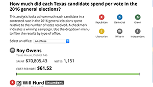

Campaign Finances
Learned and used PostgreSQL to create a database of Texas politicians’ campaign finances. Cleaned and fact-checked the database in Microsoft Excel and Google Spreadsheet to verify calculations.
PostgreSQL, Excel, Google Sheets
I'm Aditi Bhandari and I recently graduated from Northwestern University with a degree in journalism and a concentration in design. I'm currently the accessibility intern at NPR, and previously worked at The Texas Tribune, The Boston Globe and the Knight Lab.
Learned and used PostgreSQL to create a database of Texas politicians’ campaign finances. Cleaned and fact-checked the database in Microsoft Excel and Google Spreadsheet to verify calculations.
PostgreSQL, Excel, Google Sheets
Pulled Texas public education data from the Tribune's Django database and compared student and teacher demographics.
Google Spreadsheets, HTML, CSS/Sass, Django
Found and cleaned a 60,000+ row dataset for a breaking news story. Created print and web versions of the chart.
Excel, CSS/Stylus, D3.js, Illustrator
Pitched and gave a lightning talk at #NICAR17 about physical self-care as a developer, journalist, or just someone who sits at a computer all day. Here are my slides and speaker notes.
HTML, CSS/Bootstrap, Photoshop
It's no secret that I love GIFs. I led a workshop at the Knight Lab to teach students how to make GIFs using Giphy Capture and Photoshop.
Our DSGN 375: Data As Art final project. We compared Chicago public transport data and the socioeconomic distribution of the city as a 3-D data visualization.